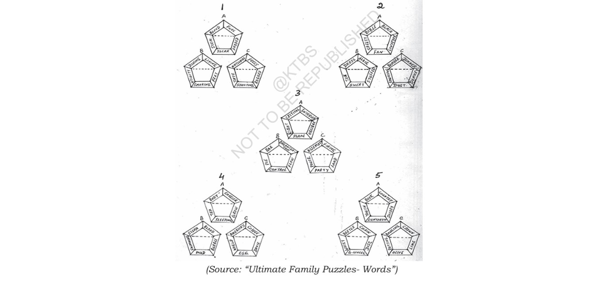

Learn with Poornima Notes
Karnataka State Board (KTBS) 2026-27
Karnataka State Board (KTBS) 2026-27
The Eyes are not Here is a touching short story written by Ruskin Bond. It beautifully portrays human emotions, kindness, imagination, and the importance of inner beauty. The story takes place during a train journey and reveals an unexpected twist that teaches us not to judge people merely by their appearance.
Ruskin Bond is one of India's most loved authors. He is famous for writing stories about nature, children and everyday life. His writings are simple, heart-touching and full of human values.
The story highlights that true beauty lies within a person. It also teaches us empathy, imagination and the importance of looking beyond physical appearances.
| Word | Meaning |
|---|---|
| slap | the sound produced by the slipper when it hits the sole of her feet. |
| startled | surprised |
| formidable | powerful; causing fear |
| registers (v) | records |
| romantic fool | a stupid person who is highly emotional |
| window ledge | window sill; a narrow shelf below a window |
| mind's eye | imagination |
| venture | to say or do something which involves risk |
| landscape | all the features of an area that can be seen when looking across it |
| gallant | brave |
| thank goodness | an expression used in conversation to express relief |
| tantalizing | making him desire her presence all the more |
| linger | stay for a while |
| reverie | day-dream |
Answer: d. They gave detailed instructions about the care she had to take.
Answer: The narrator was completely blind and could only sense light and darkness. Although he noticed details like the sound of her slippers, he believed he would never truly know what she looked like.
Answer: ❌ False.
Answer: He inferred that people with good eyesight often fail to notice what is close to them, whereas blind people depend more on their other senses.
Answer: b.
Answer: He described Mussoorie from his earlier memories of visiting the hills when he had eyesight.
Answer: He wanted to flatter her and continue the pleasant conversation without revealing his blindness.
Answer: Game.
Answer: ✅ True.
Answer: The narrator discovers that the girl, whom he had admired throughout the journey, was also completely blind.
| The Narrator | The Girl |
|---|---|
|
Clever Smart Humorous Curious Inquisitive Romantic Pretentious Emotional Sentimental Intuitive |
Clever Smart Humorous Curious Inquisitive Confident Emotional Sentimental Intuitive Suspicious Careful |
a. What is the figure of speech used in the passage above?
Answer: Metaphor (with vivid imagery).
b. What is the vase compared to?
Answer: The vase is compared to the physical presence or body of the girl.
c. What does the shattering of the vase refer to?
Answer: It refers to the girl's departure from the train and the end of their brief meeting.
d. What does “the scent of the roses” refer to?
Answer: It refers to the fragrance of the girl's hair and the pleasant memories she left behind.
a. What kind of game does the speaker play with his fellow travellers?
Answer: He hides his blindness and behaves as though he can see.
b. What do you understand from this about his attitude?
Answer: It shows that he is imaginative, confident, courageous and refuses to be defeated by his disability.
c. Who had outwitted whom, in the game already played by the narrator?
Answer: Neither had outwitted the other. Both the narrator and the girl were hiding their blindness from each other.
Throughout the train journey, the narrator went to great lengths to conceal his blindness and convince the girl that he had normal eyesight. When she mentioned the beauty of Mussoorie, he vividly described the hills from his past memories. He pretended to look out of the train window while imagining the passing scenery from the sounds around him. He even complimented the girl by saying that she had an "interesting face" to appear confident and observant. All these actions helped him successfully hide his blindness throughout their conversation.
In "The Eyes are not Here", both the narrator and the girl believe they are successfully hiding their blindness from each other. The narrator confidently pretends that he can see by describing the scenery and speaking naturally. Likewise, the girl cleverly hides her own blindness throughout the journey. At the end of the story, the narrator learns that the girl was also completely blind. Thus, neither of them actually outwitted the other. The story beautifully teaches that we should never be overconfident because others may be equally clever.
After learning that the girl was completely blind, the narrator would probably feel shocked and surprised. He would realize that all his efforts to hide his blindness had been unnecessary because the girl shared the same condition. He might smile at the irony of the situation and admire the girl's intelligence and confidence. At the same time, he would remember her pleasant voice, kind nature and the beautiful conversation they had shared. The experience would remain a sweet and unforgettable memory in his life.
Idioms & Phrases: to see one off, to pull out of, to take in, to call on, to break into, to be deprived of, in front of, to be covered with, to move away, to take up.
| Idiom / Phrase | Sentence |
|---|---|
| 1. to see one off | The family went to the railway station to see their daughter off as she left for college. |
| 2. to pull out of | We watched anxiously from the platform as the train slowly began to pull out of the station. |
| 3. to take in | She stood by the window for a long time, trying to take in the breathtaking mountain scenery. |
| 4. to call on | During his speech, the author had to call on his childhood memories to describe the village accurately. |
| 5. to break into | The quiet atmosphere of the library was suddenly disrupted when the toddler began to break into laughter. |
| 6. to be deprived of | Growing up in a remote area, the children happened to be deprived of basic modern amenities. |
| 7. in front of | The teacher stood in front of the classroom, explaining the new grammar rules on the blackboard. |
| 8. to be covered with | During the winter season, the hills in Mussoorie were covered with thick layers of mist and snow. |
| 9. to move away | As the train drew closer to the platform, the crowd stepped back to move away from the edge. |
| 10. to take up | After finishing high school, Rahul decided to take up Physics and Computer Science for his higher studies. |
| Words | Difference | Example Sentences |
|---|---|---|
| 1. anxious / curious |
Anxious – worried or nervous. Curious – eager to know or learn. |
Anxious: The parents were anxious about their daughter's safety. Curious: The children were curious to know what was inside the box. |
| 2. praise / flattery |
Praise – genuine appreciation. Flattery – insincere compliments. |
Praise: The teacher praised the student for his hard work. Flattery: He used flattery to impress his boss. |
| 3. lonely / alone |
Lonely – feeling sad because of isolation. Alone – by oneself. |
Lonely: She felt lonely after her friend moved away. Alone: He likes to study alone. |
| 4. change / alter |
Change – become different. Alter – modify slightly. |
Change: Leaves change colour in autumn. Alter: The tailor altered my uniform. |
| 5. vendor / hawker |
Vendor – sells goods from a shop or stall. Hawker – moves around selling goods. |
Vendor: The tea vendor sold hot tea. Hawker: The hawker sold toys on the street. |
| 6. probable / possible |
Probable – likely to happen. Possible – may happen. |
Probable: Rain is probable today. Possible: It is possible to finish the work today. |
| 7. look / see |
Look – direct your eyes intentionally. See – perceive with your eyes. |
Look: Look at the blackboard. See: I can see the rainbow clearly. |
| 8. hear / listen |
Hear – perceive sound naturally. Listen – pay attention to sound. |
Hear: I heard a loud noise. Listen: Listen carefully to the teacher. |
| 9. loud / aloud |
Loud – producing much sound. Aloud – spoken so others can hear. |
Loud: The music was very loud. Aloud: Read the poem aloud. |
| 10. hanged / hung |
Hanged – executed by hanging. Hung – suspended something. |
Hanged: The criminal was hanged. Hung: She hung the picture on the wall. |
| 11. break / brake |
Break – separate into pieces. Brake – device to stop a vehicle. |
Break: Do not break the glass. Brake: The driver applied the brake suddenly. |
| 12. desert / desert / deserts / dessert |
Desert (n) – dry land. Desert (v) – abandon. Deserts (n) – deserved reward or punishment. Dessert (n) – sweet dish after meals. |
Desert: Camels live in the desert. Desert: Soldiers should not desert their country. Deserts: He got his just deserts. Dessert: We had ice cream for dessert. |
| No. | Sentence | Answer |
|---|---|---|
| 1 | We ________ and ________ when we are out of breath. | puff and pant |
| 2 | We ________ if we fall into water unexpectedly. | splutter |
| 3 | We ________ when we are bored. | yawn |
| 4 | We ________ and ________ when we have a bad cold. | cough and sneeze |
| 5 | We ________ or ________ when we have difficulty in saying certain words. | stutter or stammer |
| 6 | We ________ when we have no handkerchief and need to blow our nose. | sniff |
| 7 | We ________ at night if we lie on our backs and with our mouths open. | snore |
Here are the details of an itinerary of the Prime Minister's visit to Bengaluru on Saturday. Put all the details in a paragraph.
| Time | Programme |
|---|---|
| 8:30 am | Arrival at HAL Airport. |
| 8:50 am | Chief Minister along with his cabinet colleagues receives the Prime Minister. |
| 9:15 am | Breakfast at Hotel West End hosted by the Karnataka Government. |
| 10:00 am | Dedicating the Metro Railway Service Stage II. |
| 10:30 am | Inauguration of the new block of the Legislators' House. |
| 11:15 am | Addressing a public rally at Palace Grounds and laying the foundation stone for a Bio-Tech Park at Bannerghatta. |
| 12:05 pm | Honouring outstanding scientists at IISc. |
| 1:00 pm | Departure to Delhi on a special flight from Bengaluru International Airport. |
The Prime Minister arrives at the Bengaluru HAL Airport at 8:30 a.m. on Saturday on a day's visit to Bengaluru. The Chief Minister, along with his cabinet colleagues, receives him at the airport. He then proceeds to Hotel West End for breakfast hosted by the Karnataka Government. Later, he dedicates the Metro Railway Service Stage II to the public and inaugurates the new block of the Legislators' House. He addresses a public rally at Palace Grounds and lays the foundation stone for a Bio-Tech Park at Bannerghatta. Afterwards, he honours outstanding scientists at the Indian Institute of Science (IISc). Finally, the Prime Minister leaves for Delhi on a special flight from Bengaluru International Airport at 1:00 p.m., concluding his official visit.
Imagine that both the narrator and the girl admitted to each other that they were blind. How then do you think the story would end? Do you think such an ending would make the story better? How?
If both the narrator and the girl had admitted that they were blind, the story would have taken a different turn. They would have laughed at the fact that each had been trying to hide the same secret. Their conversation would have become more open, honest and emotional, creating a deeper friendship between them.
However, Ruskin Bond's original ending is more powerful. The unexpected revelation that the girl was also blind creates a memorable twist and leaves the readers thinking about human nature, imagination and the tendency to judge others. This surprise ending makes the story more touching and unforgettable.
One of the unique features of English is that, unlike Indian languages, there is no one-to-one relationship between spelling and pronunciation. Many English words are not pronounced exactly as they are written. Read the following word groups aloud after your teacher and practise them with your classmates.
Pronunciation: /ʃəs/ ("shus")
Pronunciation: /ɪdʒ/ ("idge")
Exceptions: barrage, massage (/ʒ/ sound)
Pronunciation: /ʃən/ ("shun")
Pronunciation: /ʃəl/ ("shul")
The following list contains informal expressions commonly used in conversation. Use the expressions from the list to complete the sentences given below.
Expressions:
thank goodness, welcome, I'm afraid, I'd rather,
I'd better, never mind, if you don't mind,
yes please, no thanks, of course,
how do you do?, oh dear!, dear me!,
I wonder, how dare.
| No. | Conversation | Answer |
|---|---|---|
| i |
Student: Sir, I'd like to know my test marks. Teacher: __________, I have not finished the valuation. |
I'm afraid |
| ii |
Stranger: Do you mind if I smoke? Girl: Well, __________ you didn't. |
I'd rather |
| iii |
Wilma: __________, I could make a request to you. Rekha: Please tell me what I can do for you. |
If you don't mind |
| iv |
Child: I lost my pen in school. Mother: __________, I'll buy you another. |
Never mind |
| v | __________, I think I left my mobile in the office! | Oh dear! / Dear me! |
| vi |
Ramesh: How do you do? Rameez: __________ |
How do you do? |
| vii |
Son: My bike skidded and both of us were thrown out. Mother: __________, both of you are safe. |
Thank goodness |
| viii |
Kavya: __________ you can take my notes home. Zareena: Thanks. Kavya: __________ |
Of course Welcome |
| ix | Surya: __________ you say that I copied from your answer paper! | How dare |
| x | Rajesh: __________ take my studies seriously from now on. | I'd better |
| xi | Shyla: I'll make some coffee for you, __________? | If you don't mind |
| xii |
Joshua: Would you like a piece of cake? Noel: __________ Joshua: Can you have one more piece? Noel: __________ |
Yes please No thanks |
| Expression | Example Sentence |
|---|---|
| Thank goodness | Thank goodness the rain stopped before the sports meet began. |
| Welcome | "Thank you for your help." — "You're welcome." |
| I'm afraid | I'm afraid the library is closed today. |
| I'd rather | I'd rather stay home and finish my homework. |
| I'd better | I'd better start preparing for tomorrow's examination. |
| Never mind | Never mind, everyone makes mistakes. |
| If you don't mind | If you don't mind, may I borrow your dictionary? |
| Yes please | "Would you like some juice?" — "Yes please." |
| No thanks | "Would you like another cup of tea?" — "No thanks." |
| Of course | Of course I'll help you with your project. |
| How do you do? | How do you do? It's a pleasure to meet you. |
| Oh dear! | Oh dear! I forgot my homework at home. |
| I wonder | I wonder whether our school picnic will be held next month. |
| How dare | How dare you speak so rudely to your teacher! |
Activity: How good is your knowledge of your class or school? Answer the following questions using only the expressions given below. Form groups of four each and read your answers to your group.
It could / might / may be... (to express possibility)
It must be... (to express conclusion)
It can't be... (to express strong improbability)
| No. | Question | Sample Answer |
|---|---|---|
| 1 | Who is the most intelligent boy/girl in your class? | It could be Ananya, since she always scores the highest grades in Mathematics. |
| 2 | Who is the most diligent boy/girl in your class? | It must be Rahul because he completes every assignment on time. |
| 3 | Which is the most useful subject of your study? | It can't be any single subject because every subject is important. |
| 4 | What is the most unhealthy food your friend eats? | It might be French fries, which he eats almost every evening. |
| 5 | When will you get your progress card of the next exam? | It could be by the end of next month. |
| 6 | Who is the heaviest eater in your class? | It must be Karan because he always brings a large lunch box. |
| 7 | Who is the most responsible student in your class? | It can't be anyone else but Priya, our class monitor. |
| 8 | Which is the busiest month of your academic year? | It might be March because of annual examinations. |
| 9 | Who will be the top scorer this year in your class? | It could be Sneha because of her consistent performance. |
| 10 | Who has the most creative bent of mind in your class? | It must be Sameer because of his innovative ideas and projects. |
| No. | Question | Answer |
|---|---|---|
| 1 | _____ our many faults, our parents love us. a) Besides b) Even though c) In spite of d) Having |
c) In spite of |
| 2 | It's late to go for a walk now; _____ it has started raining. a) in case b) besides c) however d) even though |
b) besides |
| 3 | Do you enjoy _____ cricket? a) to play b) to playing c) for playing d) playing |
d) playing |
| 4 | We are really looking forward _____ you again. a) to seeing b) to see c) see d) seeing |
a) to seeing |
| 5 | Esther _____ with the dog. a) befriended b) made friends c) made friend d) made friendly |
b) made friends |
| 6 | The balloon _____ when the child stepped on it. a) burst b) bursted c) has bursted d) had bursted |
a) burst |
| 7 | He would have attended the meeting if he _____ time. a) has had b) had had c) would have had d) had |
b) had had |
| 8 | There were _____ guests today compared to yesterday. a) less b) lesser c) few d) fewer |
d) fewer |
| 9 | "Where are you? I have been _____ you the whole morning." a) searching b) searching for c) searched d) searched for |
b) searching for |
| 10 | Reaching the top of the mountain, we _____ energy left for the descent. a) had hardly any b) hadn't hardly any c) had hardly no d) hadn't hardly no |
a) had hardly any |
| 11 | Everyone brought _____ lunch to the picnic. a) their b) there c) theirs d) his/her |
d) his/her |
| 12 | The package containing books and records _____ last week. a) is delivered b) was delivered c) are delivered d) were delivered |
b) was delivered |
| 13 | Which hand do you write _____ ? a) in b) with c) on d) about |
b) with |
| 14 | Noel shot _____ the criminal but he escaped. a) on b) at c) for d) no preposition |
b) at |
| 15 | I have been trying to learn guitar, but I _____ yet. a) did not succeed b) will not succeed c) have not succeeded d) had not succeeded |
c) have not succeeded |
| 16 | It was difficult to see through the _____ of the headlights. a) brilliance b) dazzle c) shine d) glare |
d) glare |
| 17 | The idea is difficult to _____ to anyone who is illiterate. a) put through b) put across c) take in d) make over |
b) put across |
| 18 | I entered examinations through which I _____ to journey. a) will be destined b) would be destined c) was destined d) destined |
c) was destined |
| 19 | Growing up means _____ getting larger, _____ using our senses. a) neither...nor b) either...or c) not only...but also d) both...as well as |
c) not only...but also |
| 20 | I think these are those _____ books. a) boys' b) boy's c) boys d) boyes |
a) boys' |
| 21 | When asked about the mischief, the three boys looked at _____. a) each other b) one another c) the other d) one other |
b) one another |
| 22 | My first impression _____ at the site was one of disillusionment. a) on arriving b) at arriving c) while arriving d) when arriving |
a) on arriving |
| 23 | _____ my good advice, Latha walked home in the rain. a) Rejecting herself of b) Away from c) Contrary to d) With |
c) Contrary to |
| 24 | If you ask nicely, mother will probably _____ the chocolate. a) let you to have b) allow you have c) allow that you have d) let you have |
d) let you have |
| 25 | Of the two toys, the child chose _____. a) the one most expensive b) the less expensive c) the least expensive d) the most expensive of them |
b) the less expensive |
Fill in the middle of each jewel with a word which can be put after each of the surrounding words to make meaningful two-word phrases. The first one has been completed for you.

| No. | Middle Word | Two-word Phrases |
|---|---|---|
| 1 | Cell | Blood Cell, Stem Cell, Solar Cell, Padded Cell, Fuel Cell |
| 2 | Belt | Bible Belt, Safety Belt, Conveyor Belt, Fan Belt |
| 3 | Angle | Critical Angle, Interior Angle, Right Angle, Plane Angle, Oblique Angle |
| 4 | Bag | Body Bag, Carrier Bag, Tea Bag, Sleeping Bag, Grow Bag |
| 5 | Green | Crown Green, Bowling Green, Putting Green, Olive Green, Lime Green |
Try to solve the remaining jewels by finding the word that correctly combines with each surrounding word to form meaningful English phrases. Discuss your answers with your classmates.